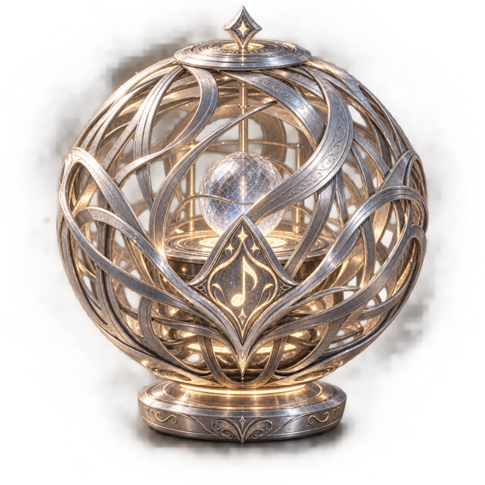
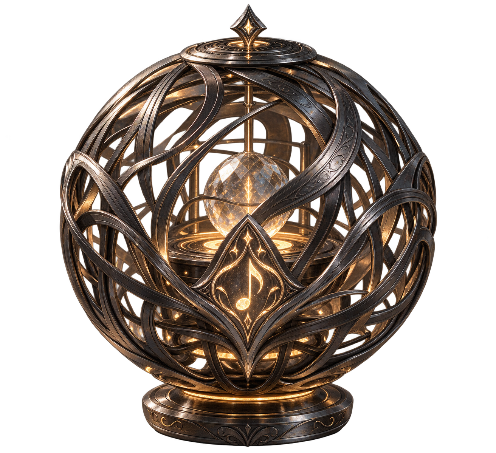
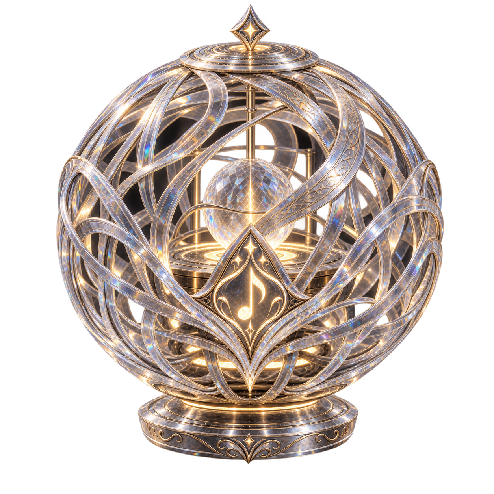
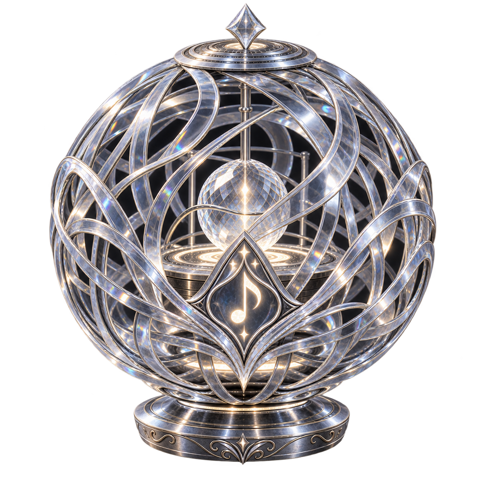
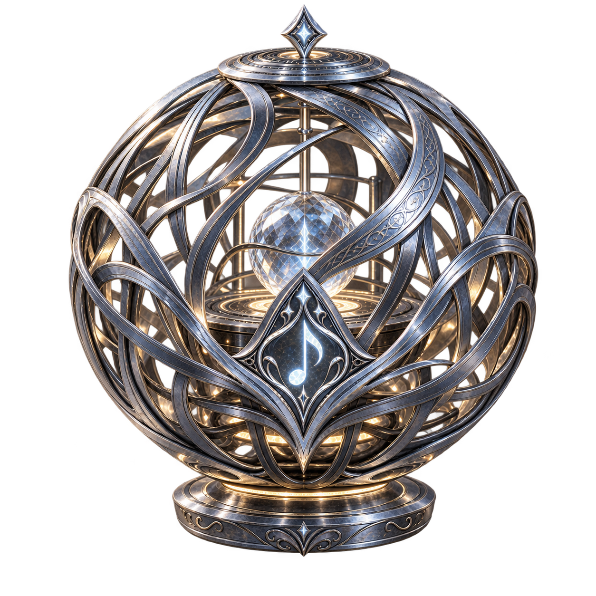
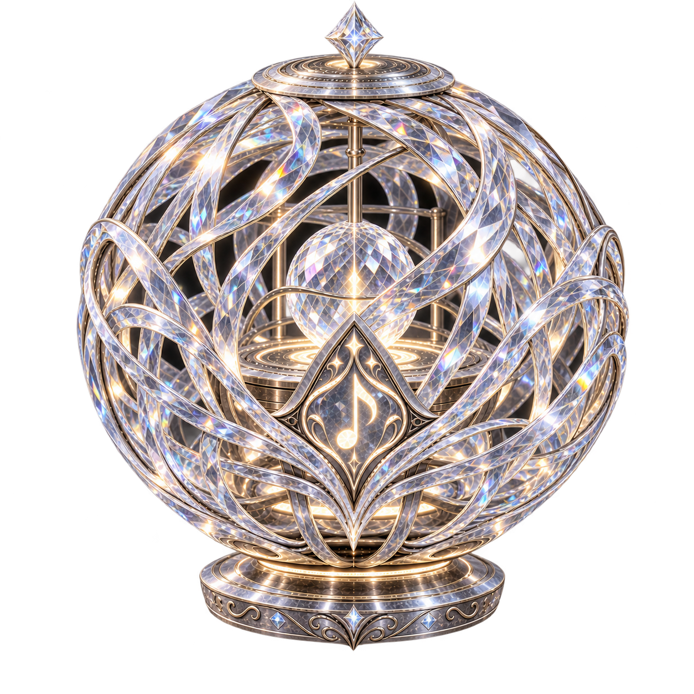
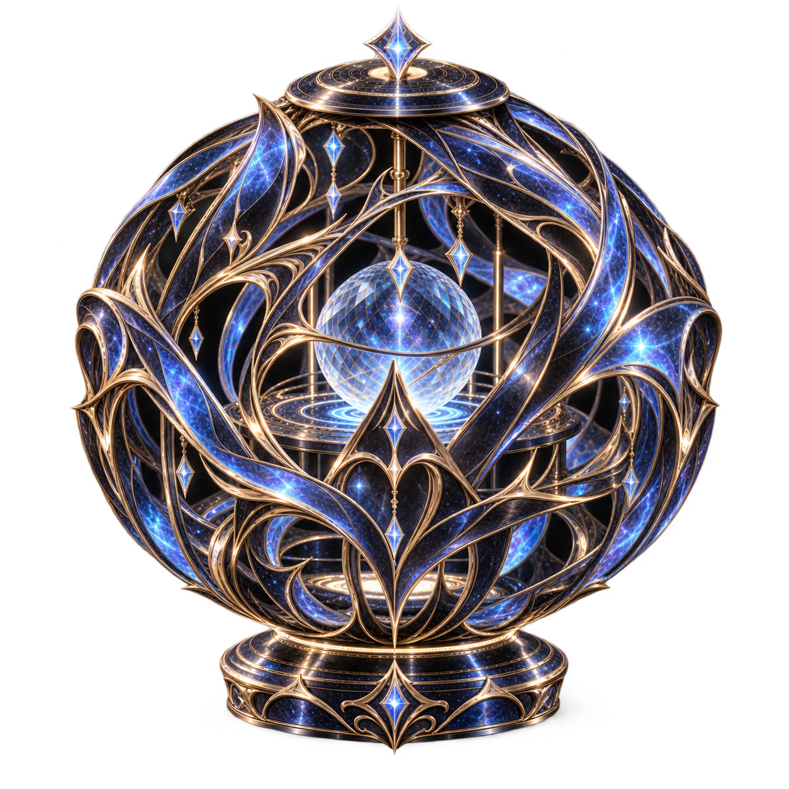

01 • Modèle d'entrée de gamme
Métal
- Matériau
- Filaments métalliques
- Caractéristiques
- Simple, robuste et fonctionnelle. Une Luma correcte, sans fioritures, pensée pour rendre l'écoute des Mélopierres accessible.
- Prix
- 10 Silangs d'argent
Aussi appelées Sphères d'Harmonie, les Luma accueillent une Mélopierre en leur cœur et en diffusent la musique dans une bulle magique. Leur structure de filaments s'ouvre sous la paume comme une fleur, puis se referme autour de la pierre.
D'un modèle à l'autre, la finition, la résonance et le rendu sonore évoluent. Voici la gamme, du modèle le plus accessible au plus exceptionnel.







Un modèle si rare que même son existence tient presque de la légende.